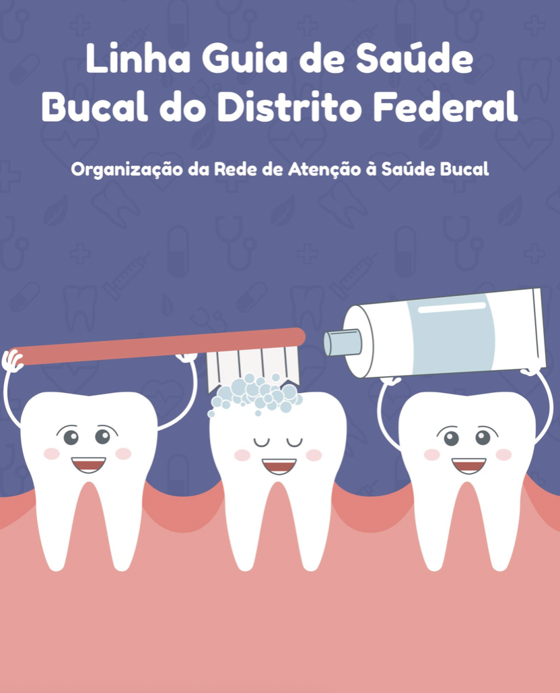

TÓPICO 2
O TRABALHO COLABORATIVO E INTERPROFISSIONAL NA APS
TÓPICO 2
O TRABALHO COLABORATIVO E INTERPROFISSIONAL NA APS
De acordo com a publicação (DISTRITO FEDERAL, 2018):

A equipe de Saúde Bucal na Estratégia Saúde da Família representa a criação de um espaço de práticas e relações a serem construídas para a reorientação do processo de trabalho...

Em consonância com a PNAB (BRASIL, 2017), o Guia reforça que, no trabalho em equipe multiprofissional, é fundamental preservar as especificidades, mas também flexibilizar a sua divisão. Além disso, traz competências colaborativas ao ressaltar a importância do desenvolvimento da comunicação compartilhada no manejo dos problemas cotidianos, a fim de estabelecer na equipe uma relação de trabalho integrado.
